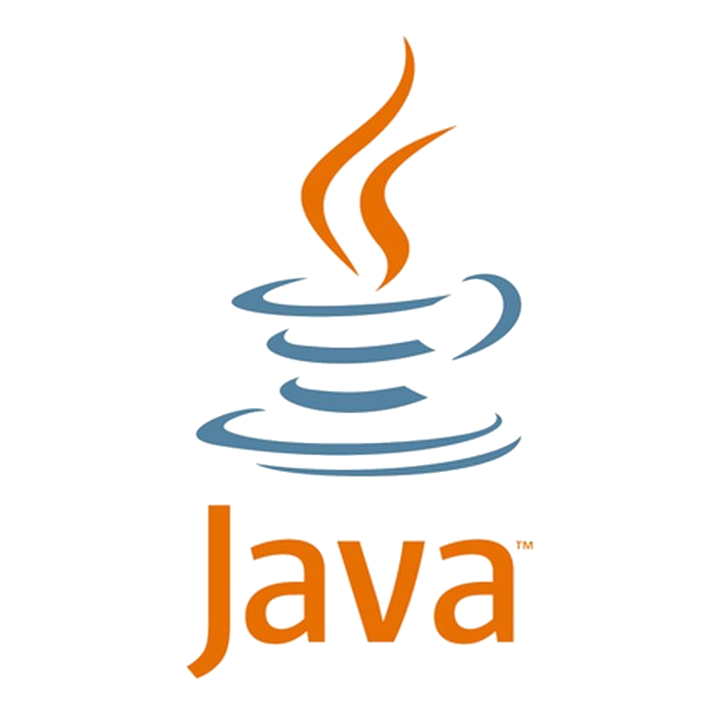
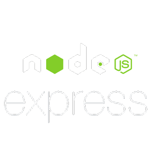
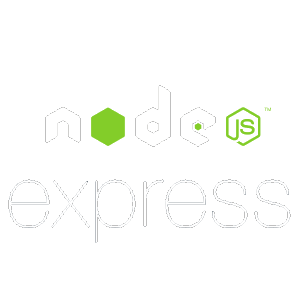
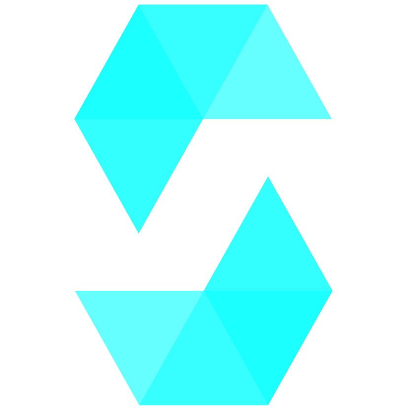
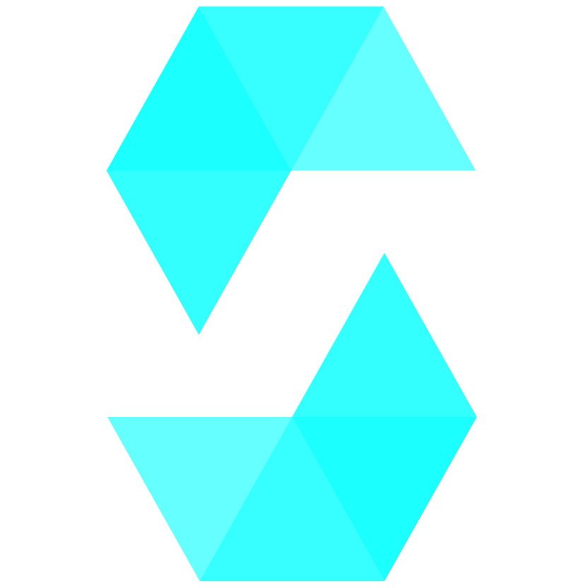

So who is
Abhitej Bokka?
Let's find out 🚀
Keep Scrolling...
About Me
📚 I'm at Rutgers studying CS & Statistics
🔭 I’m currently working on a JavaScript project to rate off-campus housing with a friend
🌱 I’m currently learning Python & AWS
👯 I’m looking to collaborate on any web3.0 projects
💬 Ask me about Marvel, keeping aquariums, or philosophy
What do I do outside of coding though?
Basketball
You can find me at the College Ave Gym shooting baskets with my friends.
Baking
Cakes & Brownies are my go to whenever I'm craving some desert.
Table Tennis
It's great to take a break from work to play ping pong and I'll always try to curve the ball.
Unrelated stuff about Me
I have 2 fish tanks 🐟!
I have about...
- 13 Neon Tetras
- 7 Serpae Tetras
- 5 Nerite Snails 🐌
- 4 Ember Tetras
- 3 Black Neon Tetras
- 3 Orange Guppies
- 1 Amano Shrimp 🦐
Tech I work with:
Java has been that language that will stick with me for life because it helped me understand the fundamentals of OOP and the functionality that one can implement as a programmer.I find JavaScript very versatile and easy to implement for web development like I have done right now with github pages and its very easy to work with its frameworks.
MongoDB and SQL have been good tools to understand data management and helped me connect my projects to create full stack applications.
Proficient:

 

Intermediate:
 

What work have I done?
Work Experience
Yahoo
June 2023 - Present
ADP
June 2022 - August 2022
Rutgers Mobile App Development Mentor
May 2021 - Present
Freelance Computer Science, Math, and ACT Tutor
October 2018 - April 2021
FedEx Ground Package Handler
August 2020 - September 2020
Rutgers Laboratory Assistant Internship
June 2019 - August 2019
Thanks for making it all the way here!